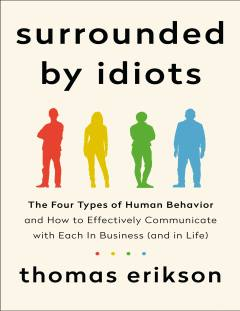

SBDISC metodi orqali odamlarni tushunish va muloqotni yaxshilash haqida kitob.
Bu kitob DISC metodiga asoslangan holda insonlarning xulq-atvorini to'rt turga ajratib tushuntiradi. Muallif Thomas Erikson o'quvchilarga atrofdagi odamlarni yaxshiroq tushunish va ular bilan samarali muloqot qilishni o'rgatadi. Kitob shaxsiy va kasbiy munosabatlarni yaxshilashga yo'naltirilgan amaliy maslahatlar beradi.